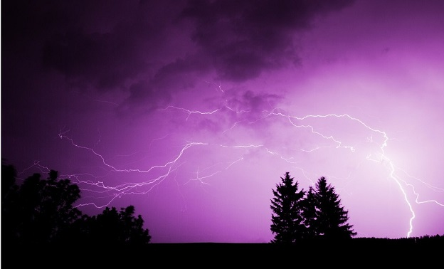
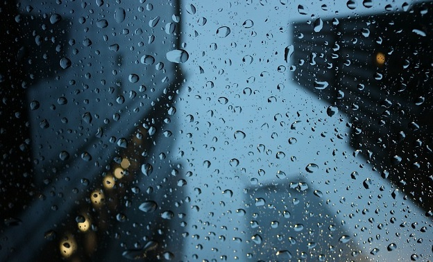
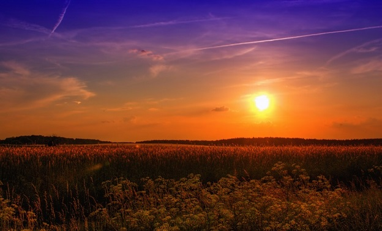
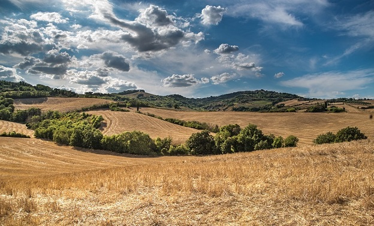
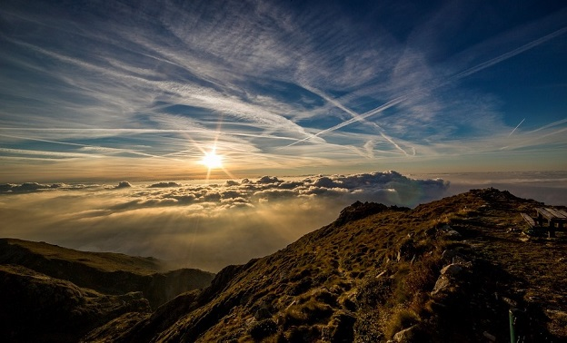

Way to Go, Idaho - Keeping Communities Connected since 2019
Please choose a city to view current conditions.
Gallery

Electrifying photo of lightning over trees by Phil Foto

Rain in the city by Jane DoeFrozen red berries by Phil Foto

An amazing summer sunset by Joe Schmoe

Lovely countryside by John Doe

Sun rise on a cloudy day in the mountains by Hugh Mann